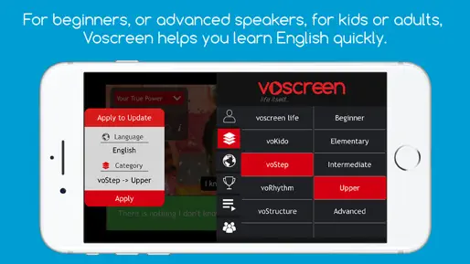

用 Voscreen 练英语听力——从安装到上手的完整实战
Voscreen 是一款基于真实影视片段的英语听力训练应用。这篇教程带你从零开始：选好 Play Mode、适应 ALIVE 动态难度、避开新手最容易踩的三个坑，20 分钟就能进入稳定练习状态。
20 分钟之内，你能把 Voscreen 装到手机上、选对适合自己的 Play Mode、完成第一次完整的听力练习流程，并且理解它跟多邻国、每日英语听力这些竞品到底差在哪。
准备
先确认三件事：
- 设备：Android 手机或平板，系统版本 7.1 以上（2017 年之后出的机型基本都没问题）。iOS 用户直接跳过这篇，那套界面流程跟 Android 有差异。
- 网络：第一次打开建议在 WiFi 下，要拉取视频素材索引；后续练习 4G/5G 也能跑，但地铁或地下室信号差的地方视频会转圈。
- 预期：Voscreen 不是背单词 app，也不是刷美剧的替代品。去官网看看——它的核心就是给你 15 秒以内的真实影视片段、裸听、做 paraphrase 选择题、看揭晓字幕这一套。
安装包大小约 19.5 MB，Google Play 搜 "Voscreen - Learn English" 直接装，也可以从官方下载拿安装包。国内商店搜不到或者被墙的话，Aptoide 的各个镜像站也都有 APK，找版本号最新的那个拉下来就行。装好之后在手机设置里给 Voscreen 加个"不清理"白名单——小米、华为、OPPO、vivo 的省电策略会在后台把它杀掉，答到一半切出去回个微信再切回来就得重加载，很烦。
第一步：选对 Play Mode，别直接点 Life itself
打开 app 之后第一个岔路口是 Play Mode 选择界面，一共五种模式。新手最容易犯的错是直接点默认的 Life itself——这个模式会随机推送片段，靠 ALIVE 系统慢慢校准难度，但前几天你会被一堆语速飞快的电影对白打懵，体验很差。
新手按这个逻辑选：
- 完全零基础 / 听力特别弱 → voKids。别不好意思，voKids 本来是给 4 岁以上孩子设计的，但它的语速 90-110 wpm，比成人日常对话慢 40%，词汇全是高频基础词，发音刻意夸张清晰。30 岁 40 岁刚起步也能用。
- 有基础但听力练得少 → voStep。这个模式预先分了 beginner / intermediate / advanced 三档，你自己选一档，推送的片段难度保持在这个水平不会乱跳。
- 想练特定语言点 → voStructure 或 voRhythm。voStructure 按语法点切（比如专门找现在完成时的片段），voRhythm 按句子词数切（1-3 词、4-6 词……13+），适合有明确短板想针对性补的人。
选好模式之后点进去，app 会拉取该模式下的素材列表，等几秒就行。
第二步：适应一次完整的练习循环
每个片段的练习流程固定四步：
播放 → 答题 → 揭晓 → 重播。别图快跳过任何一步，设计上就是让你走这个循环。
播放阶段
播放前 app 会问你"带字幕还是不带字幕"。新手第一次选不带。这是 Voscreen 最反人性也最精华的设计——先裸听一遍，别让内嵌字幕偷走你的注意力。如果你实在慌，第二遍重播的时候再选带字幕。
片段时长最多 15 秒，这是官方卡死的。教育研究里说这个长度刚好落在大多数人的工作记忆容量里，不会让你听到后半句忘了前半句。素材来源四类：电影（占最大头）、纪录片（语速最慢、发音最清晰）、MV（练弱读和连读）、卡通（voKids 模式专用）。
答题阶段
播放完之后弹出 paraphrase 选择题——给你四个选项，选哪个句子最接近刚才那段视频说的意思。不是选原文，是选同义表达。这是 Voscreen 跟所有"听写填空"类 app 最大的区别：它考的是你有没有理解，不是你能不能拼对每个词。
答题有 21 秒倒计时。时间到了还没选算跳过，不计入对错但也不会推进 ALIVE 的难度校准。
揭晓阶段
选完之后 app 先播一段对/错的反馈动画，然后才显示完整英文字幕。注意：揭晓字幕是手动整理过的，不是逐字转写——这一点在voscreen文档里有详细设计说明。它会把弱读的 "um" "er" "you know" 省掉，把连读的词拆开，偶尔修正口误——目的是让你对照 paraphrase 选项的时候能清楚看到句子结构，不是让你当 transcript 用。
如果这一步字幕没显示或者只显示一半，多半是网络慢，反馈动画还没播完字幕文本没加载好。等一下就行。等了还不出来就退出这道题重进。
重播阶段
揭晓完你可以再放一遍视频，这次带不带字幕都行。别跳过这一步——第一遍裸听你大概率只抓住几个关键词，重播带着揭晓字幕听一遍，你才能对上"原来视频里说的就是这些词"。
第三步：让 ALIVE 帮你调难度
如果你选了 Life itself 或 voStep 模式（非预设档），背后的 ALIVE 系统会根据你的答题记录动态调后续片段的难度：
- 连续答对 3 题以上 → 自动推语速更快、结构更复杂、含更多短语动词和习语的片段
- 连续答错 → 暂停升难度，推结构简单、发音清晰的（比如纪录片旁白）
- 长期不碰 → 回来先做一轮小测试重新校准
这个机制跟多邻国那种预设关卡结构不一样，更接近知识追踪模型。对你来说好处是不用自己纠结练什么难度，坏处是如果你连错太多会被打回简单档，自尊心受点小打击。正常现象，别硬撑。
常见卡点
卡点一：Android 后台被杀，答到一半重加载
小米、华为、OPPO、vivo 这几个品牌的手机尤其常见。省电策略默认在后台杀掉不活跃的 app，你切出去回个微信再切回来，刚才练到第几题全忘了。
解法：手机设置 → 电池/省电 → 应用白名单，把 Voscreen 加进去。不同品牌入口不一样，搜"不清理"或"后台保护"一般能找到。
卡点二：字幕不显示或错位
两种情况：播放阶段选了带字幕但视频上没字幕 → 大概率是这条视频本身没内嵌字幕，不影响学习，揭晓环节的独立字幕照样能看。揭晓环节的字幕不显示 → 等反馈动画播完，还不出来就退出重进或重开 app。
卡点三：视频加载慢 / 频繁转圈
Voscreen 的视频没有预加载机制，不像 YouTube 提前缓冲。地铁、地下室、信号弱的地方会很痛苦。解法：练之前先在 WiFi 下把当天要练的素材缓存好，或者干脆换个网络条件好的时段练。
进阶玩法
以上就是从零到上手的完整流程。跑通之后你可以试试 voRhythm 模式专门练节奏——它按句子词数分档，从 1-3 词一直到 13+，对"每个词都听清但连起来就不懂"的人特别有用。或者跟老师同学拉个班级，Voscreen 内置班级功能，老师能布置片段作业、看答题数据。
如果需要查阅开源代码和配套的素材清单，可以分别去 GitHub、Gitee 和 GitCode 看看，国内访问后两个更顺畅。
